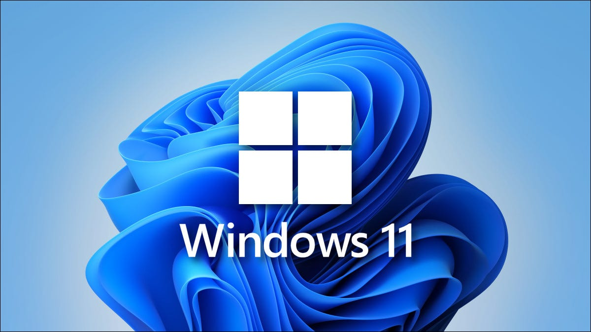
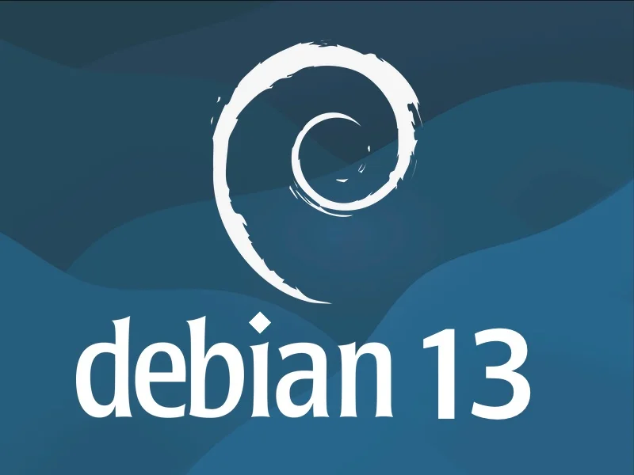
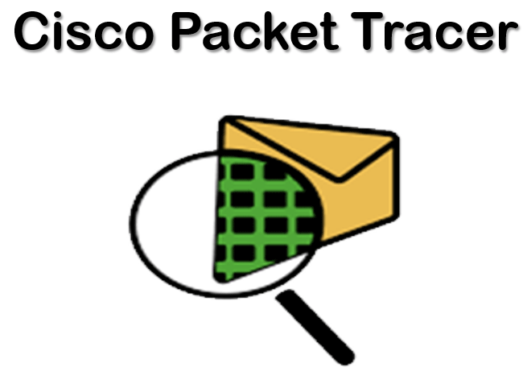

Admin. Windows Server
PDFDéploiement AD DS, OU, utilisateurs, groupes et DNS sur Windows Server 2022.
ConsulterÉtudiant BTS SIO — SISR · AFTEC Rennes
Mes domaines techniques acquis en formation SISR et en pratique. Filtrez par catégorie.
Déploiement AD DS, OU, utilisateurs, groupes et DNS sur Windows Server 2022.
Consulter
Migration local → serveur : FTP, export/import SQL phpMyAdmin, wp-config.php.
Consulter
Procédure complète d'installation et configuration d'un poste Windows 11 professionnel.
ConsulterInstallation et configuration des services DHCP et DNS sur Windows Server 2025.
Consulter
Configuration DHCP et DNS sur serveur Debian 13 en ligne de commande.
Consulter
Infrastructure hiérarchisée avec routeur et commutateurs sous Cisco IOS : adressage IP, sécurisation des accès, configuration CLI et vérification de connectivité inter-réseaux.
ConsulterProchain document
Deux veilles réalisées dans le cadre du BTS SIO SISR — année scolaire 2025/2026.
Écrivez-moi directement
nlarivie35@gmail.comVous cherchez un alternant motivé en BTS SIO SISR pour 2026–2027 ? N'hésitez pas à me contacter, je serai ravi d'échanger.
| Localisation | Rennes, France |
| École | AFTEC Rennes |
| Formation | BTS SIO — SISR |
| Disponible | Alternance 2026–2027 |
| Voir le profil → | |
| CV | Télécharger → |